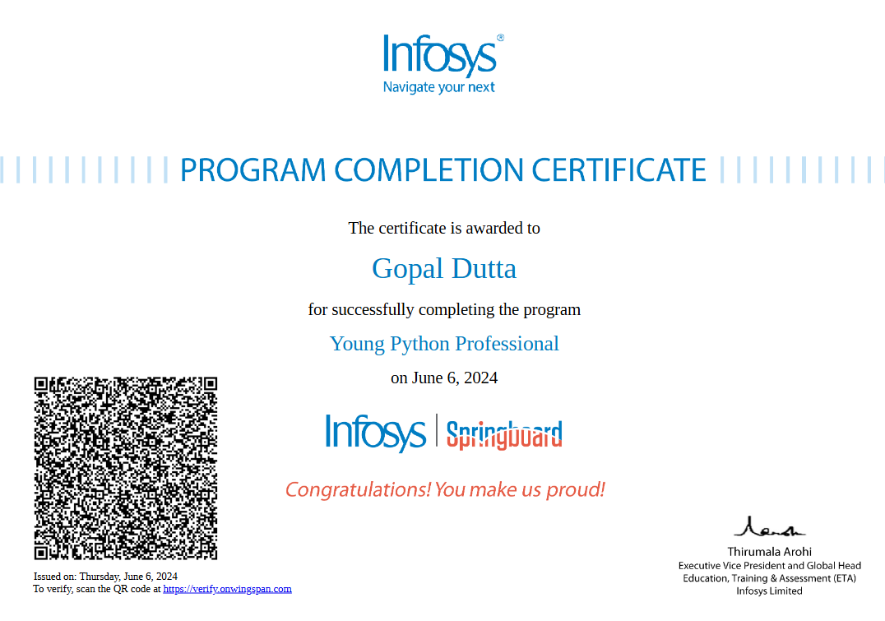
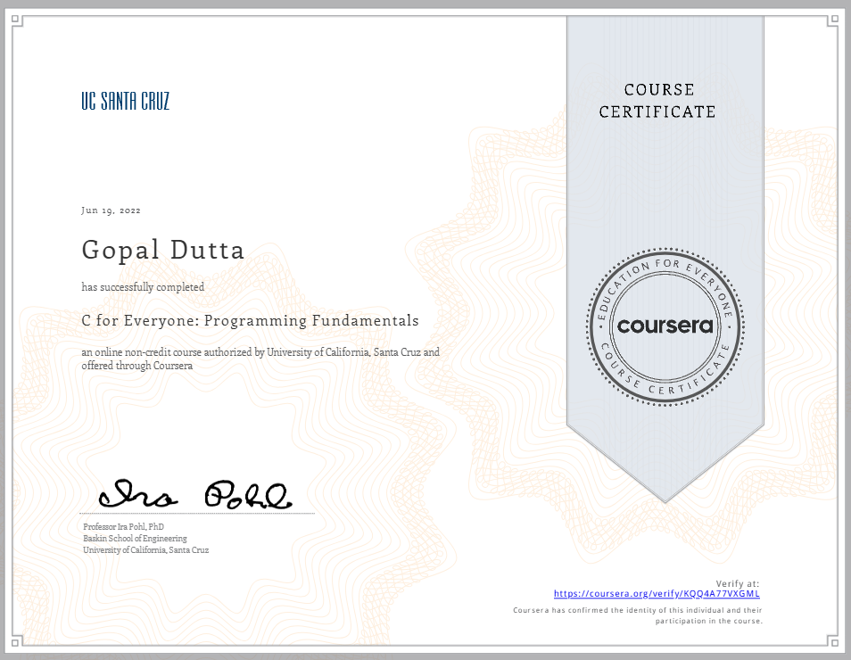
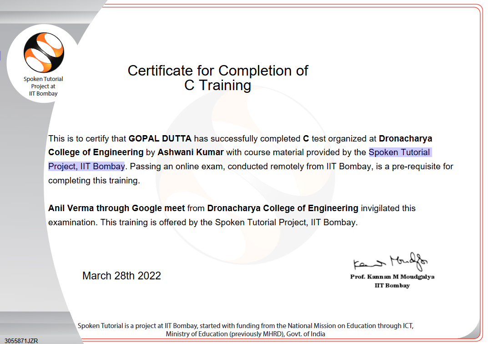
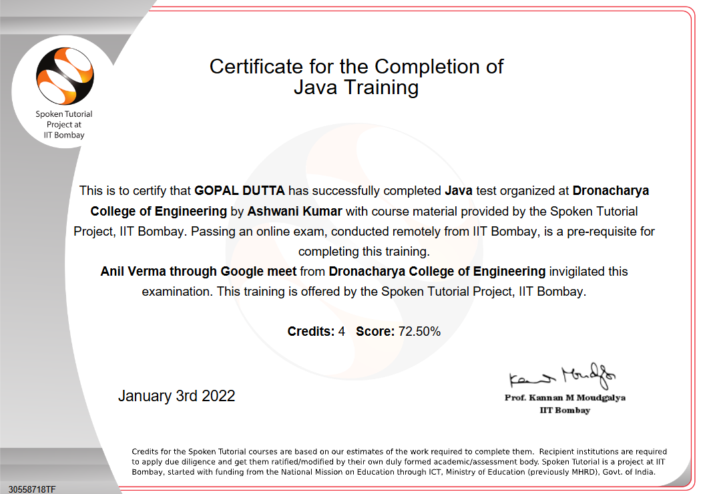
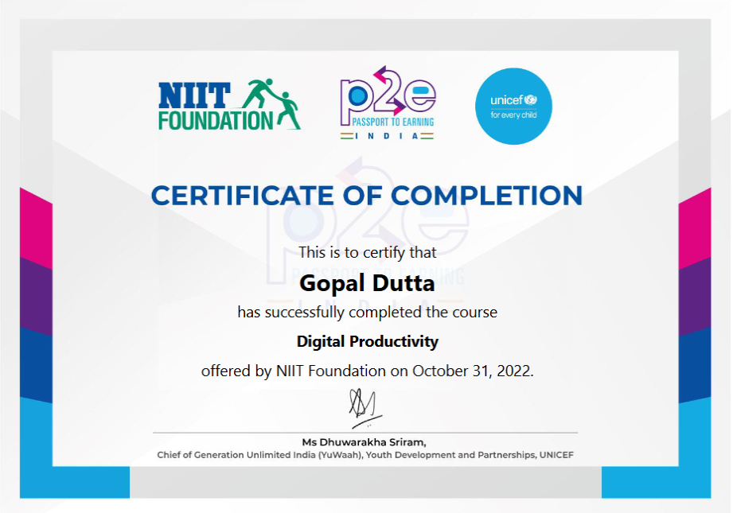
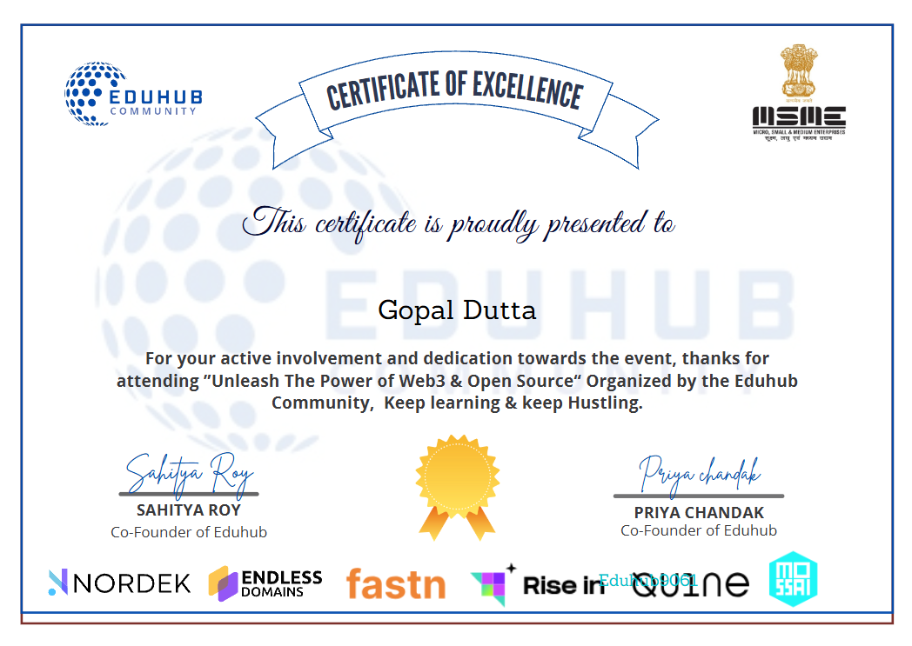
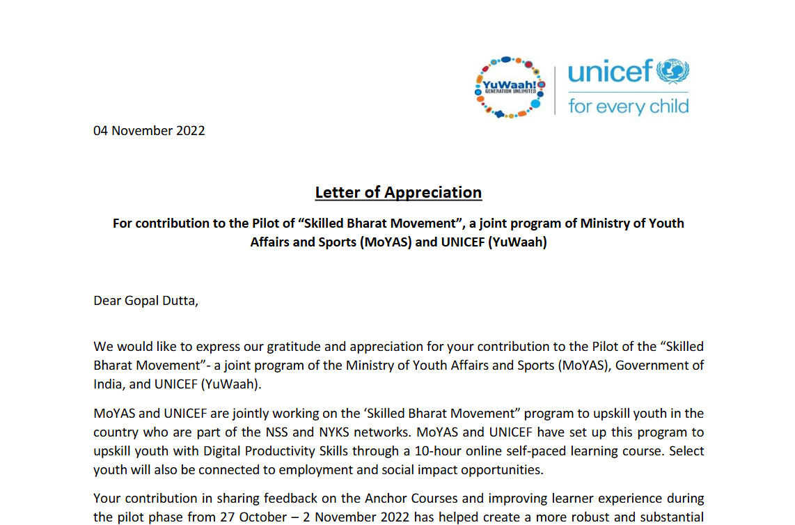
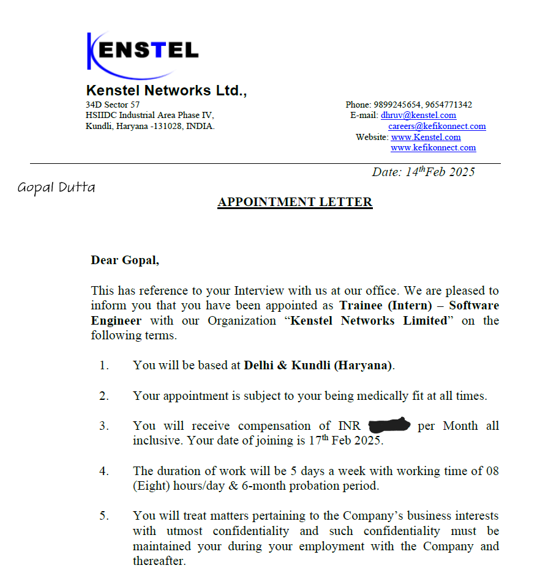
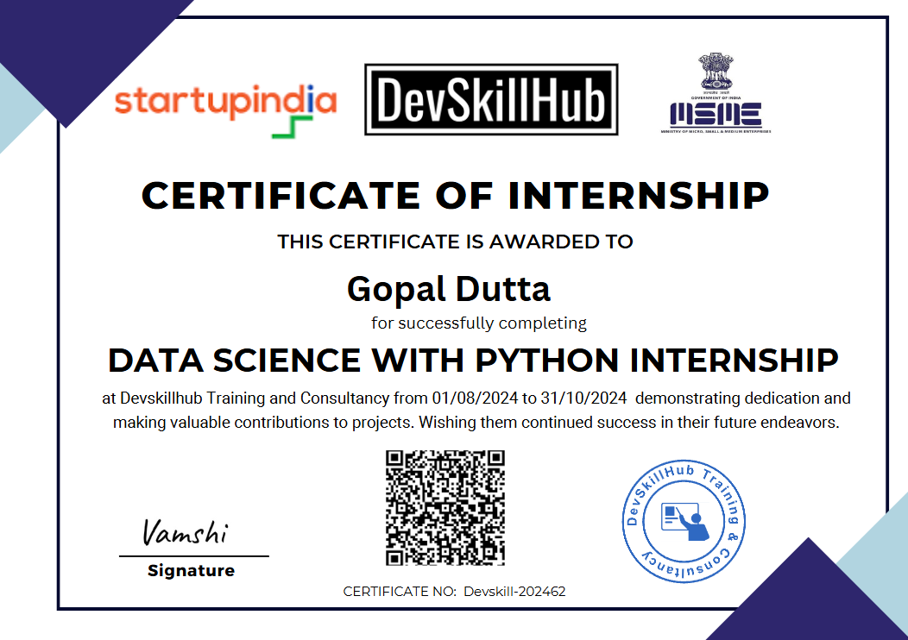
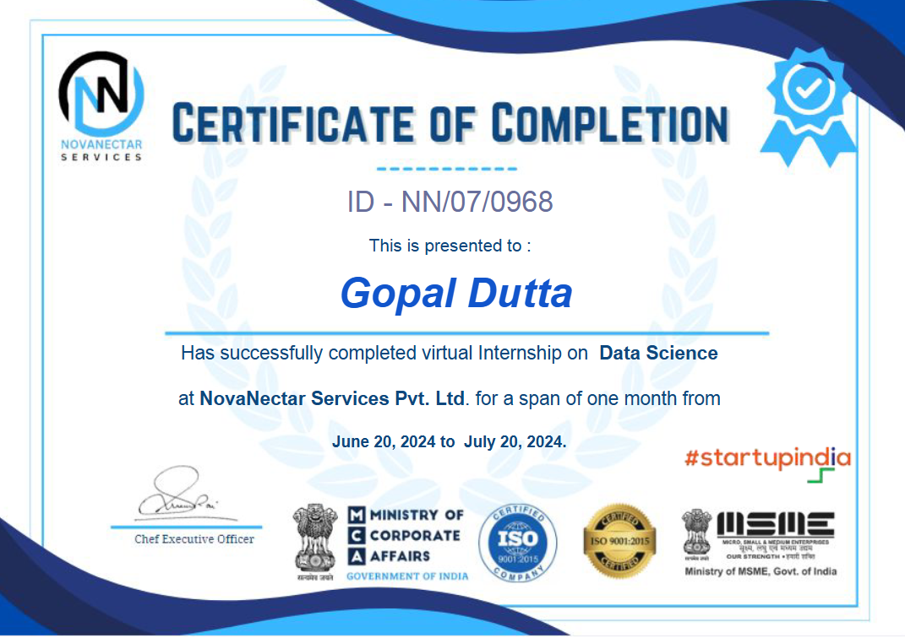

Young Python Professional - Infosys

Issued by: Infosys
Date: June 2024
This certification recognizing proficiency in Python programming fundamentals and application.
Aspiring Data Scientist | Data Analyst | Python Developer | Machine Learning Enthusiast

Issued by: Infosys
Date: June 2024
This certification recognizing proficiency in Python programming fundamentals and application.

Issued by: Coursera (University of California, Santa Cruz)
Date: June 2022
Completed a comprehensive course on the fundamentals of programming using the C language.

Issued by: Spoken Tutorial Project, IIT Bombay
Date: March 2022
Successfully completed and passed C Programming language test organised by Spoken Tutorial Project, IIT Bombay which helps me to apply my C knowledge practically to get a better understanding.

Issued by: Spoken Tutorial Project, IIT Bombay
Date: January 2022
Successfully completed and passed Java Programming language test organised by Spoken Tutorial Project, IIT Bombay which helps me to apply my Java knowledge practically to get a better understanding.

Issued by: NIIT Foundation
Date: October 2022
This certificate focuses on my training for using digital tools and software to enhance efficiency and effectiveness in a work or academic environment.

Issued by: Eduhub Community
Date: October 2023
This "Certificate of Excellence" was presented by the Eduhub Community for attending "Unleash The Power of Web3 & Open Source." in which I learned more about open source project and technology.

Issued by: Ministry of Youth Affairs and Sports (MoYAS) and UNICEF (YuWaah)
Date: November 2022
Completing this program helps me to upskill my Digital and Social Productivity Skills.

Issued by: Kenstel Networks Limited
Date: February 2025 - March 2025
During this Internship I was able to strong my Python, Networking and Testing concept.

Issued by: Devskill Hub
Date: August 2024 - October 2024
Completing this Internship helps me to sharpen my Python, Machine Learning and Deep Learning concept.

Issued by: NovaNectar Services Private Limited
Date: June 2024 - July 2024
Completing this Internship helps me to sharpen my Data analysis skills like Python, Machine Learning, Pandas and NumPy concept.
I will be adding more certificates in the future.